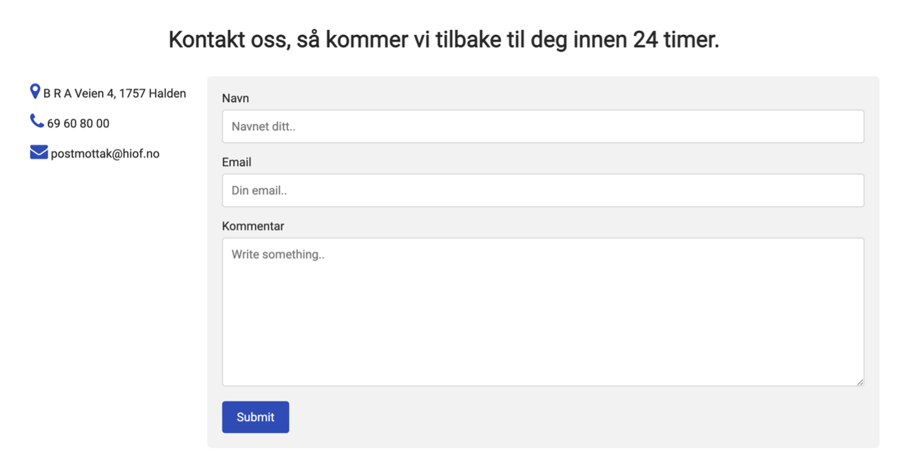
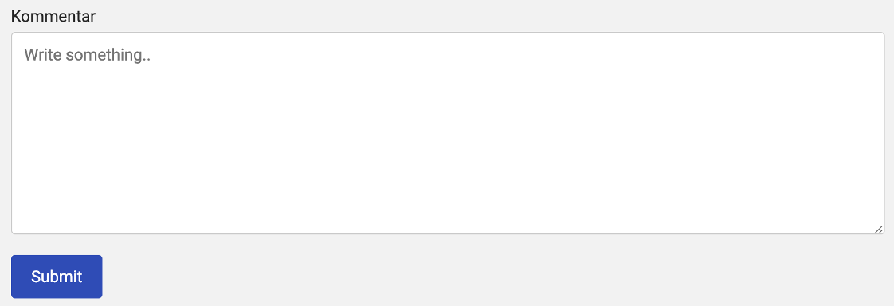

Analyse av nettside yes bro
Jeg hoster nettsiden min gjennom Github, som gir meg mer fleksibilitet til å jobbe hvor jeg ønsker og det tillot meg til å gjennomføre en lighthouse rapport for at jeg kan vurdere SEO og UU. Jeg skal bryte ned resultater og eventuelle tiltak for å optimalisere min nettside så best som mulig. Siden oppgaven ber om å vurdere SEO og UU (Accessibility), så vil jeg bare analysere disse to punktene.Første lighthouse rapport:

Jeg fikk 100% for UU og 80% for SEO for alle innholdssidene for dekstop.
Nøyaktig resultater for Desktop & Mobile:
DESKTOP
Hjem = UU: 100% + SEO: 80%
CMS = UU: 100% + SEO: 80%
Analyse = UU: 100% + SEO: 80%
UU vs SEO = UU: 100% + SEO: 80%
Kontakt oss = UU: 100% + SEO: 80%
MOBIL
Hjem = UU: 94% + SEO: 80%
CMS = UU: 94% + SEO: 80%
Analyse = UU: 94% + SEO: 79%
UU vs SEO = UU: 94% + SEO: 80%
Kontakt oss = UU: 92% + SEO: 80%
Feil:

Enkelt og greit, så manglet jeg meta-stikkord. Jeg måtte legge det til i >Header> med relevante stikkord, som er unik for hvert side for å optimalisere synlighet så mest som mulig.%
Jeg tok denne meta-tagget >meta name="description" content=""> og fylte den inn med relevante stikkord for hver innholdsside:
HJEM
>meta name="description" content="Artikler, Selskapsnavn, Hjemmeside, Webutvikling">
CMS
>meta name="description" content="Headless, Seamless, CMS, Headless CMS, Seamless CMS, Wordpress, Shopify, Drupal, skap en nettside">
ANALYSE
>meta name="description" content="Analyse, hvordan gjøre analyser, eksempel analyse, tips for analyse, analyse webutvikling">
UU vs SEO
>meta name="description" content="UU, SEO, søkemotoroptimalisering, nettsynlighet, universell utforming">
KONTAKT OSS
>meta name="description" content="B R A Veien 4, 1757 Halden, B R A Veien 4, B R A Veien, 69 60 80 00">


Problemet var fordi at jeg brukte anchor element, lighthouse scanner anchor elementer for linker og siden dette:
>a href="javascript:void(0);" class="icon" onclick="hamburgerMenu()">
ikke er en link så endret jeg anchor elementet til en span element:
>span href="javascript:void(0);" class="icon" onclick="hamburgerMenu()">
Samtidig måtte jeg bytte «a.icon» til «span.icon» på CSS for å implementere endringene korrekt.

Denne feilen er grunnen til at jeg ikke går fra 98% til 100% og siden den har en så minimal effekt som nesten ikke utgjør en forskjell så ser jeg ingen behov til å rette dette.
Resultater etter tiltakk:

Nøyaktig resultater for Desktop & Mobile:
DESKTOP
Hjem = UU: 100% + SEO: 100%
CMS = UU: 100% + SEO: 100%
Analyse = UU: 100% + SEO: 100%
UU vs SEO = UU: 100% + SEO: 100%%
Kontakt oss = UU: 100% + SEO: 100%
MOBIL
Hjem = UU: 100% + SEO: 98%
CMS = UU: 100% + SEO: 98%
Analyse = UU: 100% + SEO: 97%
UU vs SEO = UU: 100% + SEO: 98%
Kontakt oss = UU: 100% + SEO: 98%
Konklusjon
Nå sitter jeg igjen med tilfredsstillende resultater etter å ha gjennomført første rapport, identifiserte feil og rettet dem opp. Det viste seg at for både desktop og mobile versjonen av nettsiden hadde omtrent samme resultater og samme problemer.
Heuristisk evaluering
Jeg skal gjennomføre en heuristisk evaluering av min nettside og bedømme dem etter 10 heuristiske prinsipper. Disse prinsippene vil peke ut feil ved nettsiden eller tilby anbefalinger på hvordan man kan forbedre visse aspekter ved nettsiden på.
Visibility of system status
Dette referrerer til hvor bra nettsiden er satt opp for brukere. Når brukeren forstår hva system status er, vil det bli enklere for dem å navigere seg gjennom internettsiden.
Vurdering:
Her har jeg markert med hvit boks over hvor på nettsiden brukeren er på. Dette gjør det enklere for brukeren å navigere seg gjennom nettsiden uten å bli forvirret. Det skaper brukervennlighet og bedre struktur.
Match between system and the real world
Når man bruker konsepter og nøkkelord fra virkeligheten, eller på en måte som gjør det enklere for brukeren å skjønne, så hjelper det brukeren mer med å forstå nettsiden din enklere og det vil øke brukervennlighet samtidig.
Vurdering:
Jeg kan ordlegge konsepter på en annen måte. For CMS kunne jeg ha sakt «Skap din egen nettside» for eksempel, det er ikke sikkert alle vet hva CMS betyr, så ved å ordlegge det annerledes på den måten vil det være enklere for brukere å ta nytte av nettsiden og det vil samtidig øke brukervennlighet.
User control and freedom
Når en bruker navigerer seg gjennom en nettside, kan brukeren for eksempel trykke på noe eller utføre en handling ved uhell. Derfor er det viktig at en nettside har funksjoner som kan takle disse uhellene vis det skulle ha oppstått.
Vurdering:
På «Kontakt Oss» kan brukeren skrive feil informasjon, derfor er det viktig at «undo» funksjonen er lett tilgjengelig. Jeg kan også implementere «tilbake» knapp vis en bruker skulle ha trykket på en link ved uhell.
Consistency and standards.
Vurdering:
Brukere burde lett forstå hva enkle ord betyr på nettsiden min, derfor er det viktig at jeg ordlegger konsepter på riktig måte slik at ingen misforståelser vil oppstå under bruk av nettsiden. Derfor blir bruk av riktige bilder, ikoner ganske viktig når jeg koder min nettside. Vis en bruker blir satt på villspor kan dette påvirke brukervennligheten negativt og da har jeg gjort en dårlig jobb.
Her har jeg sørget for at ikoner er satt riktig og at kontaktskjemaet er oppklart, enkelt å forstå.
Error prevention
Nettsiden burde hjelpe brukere å forhindre problemer fra å oppstå. Dette kan bli gjort ved å sette opp konsepter på riktig måte og eliminere marginer som kan lede til feil. Man kan legge igjen beskjeder eller påminnelser før en bruker gjør en handling på nettsiden som et tiltak.
Vurdering:
På submit knappen kan jeg for eksempel gjøre uresponsivt før brukeren legger igjen en kommentar. Dette vil hinte til at kommentarfeltet er viktig, og at brukeren må legge igjen en beskjed før kontaktskjemaet blir sendt inn.
Recognition rather than recall
Nettsiden burde hjelpe brukeren med å gjenkjenne informasjon gjennom visuelle elementer for å redusere mye kompleksitet. Dette er for å organisere hjernen til brukeren på en enklere måte. På den måten blir det enklere for brukeren å huske på visse aspekter uten å binde seg til altfor mye informasjon på engang.
Vurdering:
Tabellene som jeg måtte skape på nettsiden min er noe som gjør det enklere å forstå sammenhengen mellom visse konsepter på en enkel måte, selv om det ikke er mye visuelle aspekter, så organiserer tabellen mellom fordeler og ulemper på ulike kolonner, det blir systematisert slik at det blir enklere å fordøye informasjon uten å bli overbelastet, sammenlignet med å skrive en lang artikkel isteden.
Flexibility and efficiency of use
Erfarne og uerfarne brukere har forskjellige behov for en nettside. Snarveier vil gjøre navigasjon og interaksjon enklere for mer erfarne brukere for eksempel. Det fører til at man kan utføre handlinger mye raskere, da sparer man mer tid og det vil skape tilfredstillelse for nettsiden, samtidig økt brukervennlighet.
Vurdering:
Sosial media integrasjon kan være en løsning. Når man implementerer «Del» knapper så sparer man mye mer tid enn å manuelt kopiere og lime dem inn, samtidig åpne nettstedet på hvor man skal sende eventuelle linken. Dette sparer tid. Samtidig øker dette synligheten din for potensielle besøkende for nettsiden din.
Aesthetic and minimalist design
På nettsiden, så burde interfacen være inkludere og ha utfyllende, verdifull informasjon du ønsker å vise frem til besøkende brukere. Ved å implementere en minimalistisk design så ser nettsiden din ganske enkelt å bruke, den inviterer brukeren uten kompleksitet og det vil være enklere å få øyet på diverse aspekter ved din nettside.
Vurdering:
Jeg kunne kanskje ha gjort det slik at når du trykker på en innholdsside, så kan du velge det du vil lese isteden for at alt dukker opp automatisk.
Eksempel:
Kan bli:
Help users recognize, diagnose, and recover from errors
Det skal være enkelt å forstå error meldinger. Dette vil gi dem at svar på hva som går galt og gir dem et pekepinne på hvor de skal rette på. Man vil helst ikke gi brukere avsmak når noe feil dukker opp og man bør derfor kommunisere dette på en god måte.
Vurdering:
Jeg må sørge for at vis potensielle error meldinger skulle ha oppstått, så må jeg markere dette tydelig med riktig skriftstørrelse, tydelig kommunisering og samtidig tilby hjelp for å rette dette opp. Jeg kan gå gjennom forskjellige scenarioer på hvilke error som kan muligens oppstå, på feilmeldingen kan jeg referere dem til en nettside som viser instrukser på å rette opp det relevante problemet for eksempel. Dette viser at du bryr deg om opplevelsen til brukeren og dette vil føre til mer tilfredsstillhet av din nettside.
Help and documentation
Hjelp og dokumentasjon skal lett være tilgjengelig for brukeren. Dette vil sørge for at brukeren er klar over rammeverkene til en spesifikk nettside og vil spare dem for potensielle problemer. Dette vil også sørge for at brukeren får en bedere opplevelse, samtidig blir det enklere å dekke behovene deres.
Vurdering:
Vis jeg skulle ha implementert rammeverker eller hjelp med å navigere gjennom nettsiden min, så hadde jeg sørget for at det skal lett være synlig for brukeren, jeg hadde helst plassert alt informasjon på startsiden, med klart og tydelig skriftstørrelse slik at brukere ikke trenger å lete etter det. Dette er viktig fordi det kan inneholde nøkkelinformasjon angående nettsiden som brukeren trenger å vite for å yte mest mulig ut av nettsiden.
Kilder for heuristisk evaluering
https://www.nngroup.com/articles/ten-usability-heuristics/ https://www.merixstudio.com/blog/heuristic-evaluation/Feil
Rettelse
Konklusjon
Manglet META description.
Links are not crawlable.
Jeg manglet meta-stikkord.
Jeg måtte legge det til i <Header> med relevante stikkord.
Jeg tok denne meta-tagget <meta name="description" content=""> og fylte den inn med relevante stikkord for hver innholdsside.
Problemet var fordi at jeg brukte anchor element, lighthouse scanner anchor elementer for linker og siden dette:
<a href="javascript:void(0);" class="icon" onclick="hamburgerMenu()">
ikke er en link så endret jeg anchor elementet til en span element:
<span href="javascript:void(0);" class="icon" onclick="hamburgerMenu()">
Samtidig måtte jeg bytte «a.icon» til «span.icon» på CSS for å implementere endringene korrekt.
SEO scoret gikk fra 80% til 100% på alle innholdssidene for desktop som et følge av disse endringene.
SEO scoret gikk fra 80% til 98% på alle innholdssidene for mobil, borsett fra ANALYSE siden som gikk fra 79 til 97% som et følge av disse endringene.
Ingen feil som dukket opp.
Ingen rettelse som krevdes.
Nettsiden scorte 100% på accessibility (UU), da var formålet oppnådd.